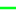

<!doctype html>
<html lang="en">
    <head>
        <meta charset="utf-8">
        <meta http-equiv="X-UA-Compatible" content="IE=edge">
        <meta name="viewport" content="initial-scale=1,user-scalable=no,maximum-scale=1,width=device-width">
        <meta name="mobile-web-app-capable" content="yes">
        <meta name="apple-mobile-web-app-capable" content="yes">
        <link rel="stylesheet" href="css/leaflet.css">
        <link rel="stylesheet" href="css/qgis2web.css"><link rel="stylesheet" href="css/fontawesome-all.min.css">
        <link rel="stylesheet" href="css/leaflet-control-geocoder.Geocoder.css">
        <link rel="stylesheet" href="css/leaflet-measure.css">
        <style>
        html, body, #map {
            width: 100%;
            height: 100%;
            padding: 0;
            margin: 0;
        }
        </style>
        <title></title>
    </head>
    <body>
        <div id="map">
        </div>
        <script src="js/qgis2web_expressions.js"></script>
        <script src="js/leaflet.js"></script>
        <script src="js/leaflet.rotatedMarker.js"></script>
        <script src="js/leaflet.pattern.js"></script>
        <script src="js/leaflet-hash.js"></script>
        <script src="js/Autolinker.min.js"></script>
        <script src="js/rbush.min.js"></script>
        <script src="js/labelgun.min.js"></script>
        <script src="js/labels.js"></script>
        <script src="js/leaflet-control-geocoder.Geocoder.js"></script>
        <script src="js/leaflet-measure.js"></script>
        <script src="data/BairrosAlvarengas_1.js"></script>
        <script src="data/LogradouroscomConflitodeProgramas_2.js"></script>
        <script src="data/LogradourosPROSAB_3.js"></script>
        <script src="data/EquipamentosUrbanos_4.js"></script>
        <script>

L.TileLayer.Grayscale = L.TileLayer.extend({
            options: {
                quotaRed: 21,
                quotaGreen: 71,
                quotaBlue: 8,
                quotaDividerTune: 0,
                quotaDivider: function() {
                    return this.quotaRed + this.quotaGreen + this.quotaBlue + this.quotaDividerTune;
                }
            },

            initialize: function (url, options) {
                options = options || {}
                options.crossOrigin = true;
                L.TileLayer.prototype.initialize.call(this, url, options);

                this.on('tileload', function(e) {
                    this._makeGrayscale(e.tile);
                });
            },

            _createTile: function () {
                var tile = L.TileLayer.prototype._createTile.call(this);
                tile.crossOrigin = "Anonymous";
                return tile;
            },

            _makeGrayscale: function (img) {
                if (img.getAttribute('data-grayscaled'))
                    return;

                        img.crossOrigin = '';
                var canvas = document.createElement("canvas");
                canvas.width = img.width;
                canvas.height = img.height;
                var ctx = canvas.getContext("2d");
                ctx.drawImage(img, 0, 0);

                var imgd = ctx.getImageData(0, 0, canvas.width, canvas.height);
                var pix = imgd.data;
                for (var i = 0, n = pix.length; i < n; i += 4) {
                                pix[i] = pix[i + 1] = pix[i + 2] = (this.options.quotaRed * pix[i] + this.options.quotaGreen * pix[i + 1] + this.options.quotaBlue * pix[i + 2]) / this.options.quotaDivider();
                }
                ctx.putImageData(imgd, 0, 0);
                img.setAttribute('data-grayscaled', true);
                img.src = canvas.toDataURL();
            }
        });

        L.tileLayer.grayscale = function (url, options) {
            return new L.TileLayer.Grayscale(url, options);
        };

        var map = L.map('map', {
            zoomControl:true, maxZoom:28, minZoom:10
        })
        var hash = new L.Hash(map);
        map.attributionControl.setPrefix('<a href="https://github.com/tomchadwin/qgis2web" target="_blank">qgis2web</a> &middot; <a href="https://leafletjs.com" title="A JS library for interactive maps">Leaflet</a> &middot; <a href="https://qgis.org">QGIS</a>');
        var autolinker = new Autolinker({truncate: {length: 30, location: 'smart'}});
        var measureControl = new L.Control.Measure({
            position: 'topleft',
            primaryLengthUnit: 'meters',
            secondaryLengthUnit: 'kilometers',
            primaryAreaUnit: 'sqmeters',
            secondaryAreaUnit: 'hectares'
        });
        measureControl.addTo(map);
        document.getElementsByClassName('leaflet-control-measure-toggle')[0]
        .innerHTML = '';
        document.getElementsByClassName('leaflet-control-measure-toggle')[0]
        .className += ' fas fa-ruler';
        var bounds_group = new L.featureGroup([]);
        function setBounds() {
            if (bounds_group.getLayers().length) {
                map.fitBounds(bounds_group.getBounds());
            }
            map.setMaxBounds(map.getBounds());
        }
        map.createPane('pane_OpenStreetMap_0');
        map.getPane('pane_OpenStreetMap_0').style.zIndex = 400;
        var layer_OpenStreetMap_0 = L.tileLayer.grayscale('https://tile.openstreetmap.org/{z}/{x}/{y}.png', {
            pane: 'pane_OpenStreetMap_0',
            opacity: 1.0,
            attribution: '',
            minZoom: 10,
            maxZoom: 28,
            minNativeZoom: 0,
            maxNativeZoom: 19
        });
        layer_OpenStreetMap_0;
        map.addLayer(layer_OpenStreetMap_0);
        function pop_BairrosAlvarengas_1(feature, layer) {
            var popupContent = '<table>\
                    <tr>\
                        <td colspan="2">' + (feature.properties['id'] !== null ? autolinker.link(feature.properties['id'].toLocaleString()) : '') + '</td>\
                    </tr>\
                    <tr>\
                        <td colspan="2">' + (feature.properties['BAIRRO'] !== null ? autolinker.link(feature.properties['BAIRRO'].toLocaleString()) : '') + '</td>\
                    </tr>\
                </table>';
            layer.bindPopup(popupContent, {maxHeight: 400});
        }

        function style_BairrosAlvarengas_1_0() {
            return {
                pane: 'pane_BairrosAlvarengas_1',
                stroke: false, 
                fill: true,
                fillOpacity: 1,
                fillColor: 'rgba(150,150,150,0.0)',
                interactive: true,
            }
        }
        map.createPane('pane_BairrosAlvarengas_1');
        map.getPane('pane_BairrosAlvarengas_1').style.zIndex = 401;
        map.getPane('pane_BairrosAlvarengas_1').style['mix-blend-mode'] = 'normal';
        var layer_BairrosAlvarengas_1 = new L.geoJson(json_BairrosAlvarengas_1, {
            attribution: '',
            interactive: true,
            dataVar: 'json_BairrosAlvarengas_1',
            layerName: 'layer_BairrosAlvarengas_1',
            pane: 'pane_BairrosAlvarengas_1',
            onEachFeature: pop_BairrosAlvarengas_1,
            style: style_BairrosAlvarengas_1_0,
        });
        bounds_group.addLayer(layer_BairrosAlvarengas_1);
        map.addLayer(layer_BairrosAlvarengas_1);
        function pop_LogradouroscomConflitodeProgramas_2(feature, layer) {
            var popupContent = '<table>\
                <tr>\
                        <th scope="row">Logradouro</th>\
                        <td>' + (feature.properties['logradouro'] !== null ? autolinker.link(feature.properties['logradouro'].toLocaleString()) : '') + '</td>\
                    </tr>\
                    <tr>\
                        <td colspan="2">' + (feature.properties['Video_0_path'] !== null ? '<a href="../' + feature.properties['Video_0_path'].toLocaleString() + '"target="_blank">Abrir o video - ' + feature.properties['Video_0_path'].toLocaleString() + '</a>' : '') + '</td>\
                    </tr>\
                    <tr>\
                        <td colspan="2">' + (feature.properties['Video_1_path'] !== null ? '<a href="../' + feature.properties['Video_1_path'].toLocaleString() + '"target="_blank">Abrir o video - ' + feature.properties['Video_1_path'].toLocaleString() + '</a>' : '') + '</td>\
                    </tr>\
                </table>';
            layer.bindPopup(popupContent, {maxHeight: 400});
        }

        function style_LogradouroscomConflitodeProgramas_2_0() {
            return {
                pane: 'pane_LogradouroscomConflitodeProgramas_2',
                opacity: 1,
                color: 'rgba(219,30,42,1.0)',
                dashArray: '',
                lineCap: 'square',
                lineJoin: 'bevel',
                weight: 3.0,
                fillOpacity: 0,
                interactive: true,
            }
        }
        map.createPane('pane_LogradouroscomConflitodeProgramas_2');
        map.getPane('pane_LogradouroscomConflitodeProgramas_2').style.zIndex = 402;
        map.getPane('pane_LogradouroscomConflitodeProgramas_2').style['mix-blend-mode'] = 'normal';
        var layer_LogradouroscomConflitodeProgramas_2 = new L.geoJson(json_LogradouroscomConflitodeProgramas_2, {
            attribution: '',
            interactive: true,
            dataVar: 'json_LogradouroscomConflitodeProgramas_2',
            layerName: 'layer_LogradouroscomConflitodeProgramas_2',
            pane: 'pane_LogradouroscomConflitodeProgramas_2',
            onEachFeature: pop_LogradouroscomConflitodeProgramas_2,
            style: style_LogradouroscomConflitodeProgramas_2_0,
        });
        bounds_group.addLayer(layer_LogradouroscomConflitodeProgramas_2);
        map.addLayer(layer_LogradouroscomConflitodeProgramas_2);
        function pop_LogradourosPROSAB_3(feature, layer) {
            var popupContent = '<table>\
                <tr>\
                        <th scope="row">Logradouro</th>\
                        <td>' + (feature.properties['logradouro'] !== null ? autolinker.link(feature.properties['logradouro'].toLocaleString()) : '') + '</td>\
                    </tr>\
                    <tr>\
                        <td colspan="2">' + (feature.properties['Video_0_path'] !== null ? '<a href="../' + feature.properties['Video_0_path'].toLocaleString() + '"target="_blank">Abrir o video - ' + feature.properties['Video_0_path'].toLocaleString() + '</a>' : '') + '</td>\
                    </tr>\
                    <tr>\
                        <td colspan="2">' + (feature.properties['Video_1_path'] !== null ? '<a href="../' + feature.properties['Video_1_path'].toLocaleString() + '"target="_blank">Abrir o video - ' + feature.properties['Video_1_path'].toLocaleString() + '</a>' : '') + '</td>\
                    </tr>\
                    <tr>\
                        <td colspan="2">' + (feature.properties['Video_2_path'] !== null ? '<a href="../' + feature.properties['Video_2_path'].toLocaleString() + '"target="_blank">Abrir o video - ' + feature.properties['Video_2_path'].toLocaleString() + '</a>' : '') + '</td>\
                    </tr>\
                    <tr>\
                        <td colspan="2">' + (feature.properties['Video_3_path'] !== null ? '<a href="../' + feature.properties['Video_3_path'].toLocaleString() + '"target="_blank">Abrir o video - ' + feature.properties['Video_3_path'].toLocaleString() + '</a>' : '') + '</td>\
                    </tr>\
                </table>';
            layer.bindPopup(popupContent, {maxHeight: 400});
        }

        function style_LogradourosPROSAB_3_0() {
            return {
                pane: 'pane_LogradourosPROSAB_3',
                opacity: 1,
                color: 'rgba(1,255,26,1.0)',
                dashArray: '',
                lineCap: 'square',
                lineJoin: 'bevel',
                weight: 3.0,
                fillOpacity: 0,
                interactive: true,
            }
        }
        map.createPane('pane_LogradourosPROSAB_3');
        map.getPane('pane_LogradourosPROSAB_3').style.zIndex = 403;
        map.getPane('pane_LogradourosPROSAB_3').style['mix-blend-mode'] = 'normal';
        var layer_LogradourosPROSAB_3 = new L.geoJson(json_LogradourosPROSAB_3, {
            attribution: '',
            interactive: true,
            dataVar: 'json_LogradourosPROSAB_3',
            layerName: 'layer_LogradourosPROSAB_3',
            pane: 'pane_LogradourosPROSAB_3',
            onEachFeature: pop_LogradourosPROSAB_3,
            style: style_LogradourosPROSAB_3_0,
        });
        bounds_group.addLayer(layer_LogradourosPROSAB_3);
        map.addLayer(layer_LogradourosPROSAB_3);
        function pop_EquipamentosUrbanos_4(feature, layer) {
            var popupContent = '<table>\
                <tr>\
                        <td colspan="2">' + (feature.properties['id'] !== null ? autolinker.link(feature.properties['id'].toLocaleString()) : '') + '</td>\
                    </tr>\
                    <tr>\
                        <th scope="row">EQUIP</th>\
                        <td>' + (feature.properties['EQUIP'] !== null ? autolinker.link(feature.properties['EQUIP'].toLocaleString()) : '') + '</td>\
                    </tr>\
                    <tr>\
                        <td colspan="2">' + (feature.properties['video_0'] !== null ? '<a href="../' + feature.properties['video_0'].toLocaleString() + '"target="_blank">Abrir o video - ' + feature.properties['video_0'].toLocaleString() + '</a>' : '') + '</td>\
                    </tr>\
                    <tr>\
                        <td colspan="2">' + (feature.properties['video_1'] !== null ? '<a href="../' + feature.properties['video_1'].toLocaleString() + '"target="_blank">Abrir o video - ' + feature.properties['video_1'].toLocaleString() + '</a>' : '') + '</td>\
                    </tr>\
                </table>';
            layer.bindPopup(popupContent, {maxHeight: 400});
        }

        function style_EquipamentosUrbanos_4_0() {
            return {
                pane: 'pane_EquipamentosUrbanos_4',
                radius: 8.0,
                opacity: 1,
                color: 'rgba(255,255,255,1.0)',
                dashArray: '',
                lineCap: 'butt',
                lineJoin: 'miter',
                weight: 2.0,
                fill: true,
                fillOpacity: 1,
                fillColor: 'rgba(0,0,0,1.0)',
                interactive: true,
            }
        }
        map.createPane('pane_EquipamentosUrbanos_4');
        map.getPane('pane_EquipamentosUrbanos_4').style.zIndex = 404;
        map.getPane('pane_EquipamentosUrbanos_4').style['mix-blend-mode'] = 'normal';
        var layer_EquipamentosUrbanos_4 = new L.geoJson(json_EquipamentosUrbanos_4, {
            attribution: '',
            interactive: true,
            dataVar: 'json_EquipamentosUrbanos_4',
            layerName: 'layer_EquipamentosUrbanos_4',
            pane: 'pane_EquipamentosUrbanos_4',
            onEachFeature: pop_EquipamentosUrbanos_4,
            pointToLayer: function (feature, latlng) {
                var context = {
                    feature: feature,
                    variables: {}
                };
                return L.circleMarker(latlng, style_EquipamentosUrbanos_4_0(feature));
            },
        });
        bounds_group.addLayer(layer_EquipamentosUrbanos_4);
        map.on("zoomend", function(e) {
            if (map.getZoom() <= 19 && map.getZoom() >= 13) {
                map.addLayer(layer_BairrosAlvarengas_1);
            } else if (map.getZoom() > 19 || map.getZoom() < 13) {
                map.removeLayer(layer_BairrosAlvarengas_1);
            }
            if (map.getZoom() <= 19 && map.getZoom() >= 14) {
                map.addLayer(layer_EquipamentosUrbanos_4);
            } else if (map.getZoom() > 19 || map.getZoom() < 14) {
                map.removeLayer(layer_EquipamentosUrbanos_4);
            }
        });
            if (map.getZoom() <= 19 && map.getZoom() >= 13) {
                map.addLayer(layer_BairrosAlvarengas_1);
            } else if (map.getZoom() > 19 || map.getZoom() < 13) {
                map.removeLayer(layer_BairrosAlvarengas_1);
            }
            if (map.getZoom() <= 19 && map.getZoom() >= 14) {
                map.addLayer(layer_EquipamentosUrbanos_4);
            } else if (map.getZoom() > 19 || map.getZoom() < 14) {
                map.removeLayer(layer_EquipamentosUrbanos_4);
            }
        var osmGeocoder = new L.Control.Geocoder({
            collapsed: true,
            position: 'topleft',
            text: 'Search',
            title: 'Testing'
        }).addTo(map);
        document.getElementsByClassName('leaflet-control-geocoder-icon')[0]
        .className += ' fa fa-search';
        document.getElementsByClassName('leaflet-control-geocoder-icon')[0]
        .title += 'Search for a place';
        var baseMaps = {};
        L.control.layers(baseMaps,{' Equipamentos Urbanos': layer_EquipamentosUrbanos_4,' Logradouros PROSAB': layer_LogradourosPROSAB_3,' Logradouros com Conflito de Programas': layer_LogradouroscomConflitodeProgramas_2,' Bairros Alvarengas': layer_BairrosAlvarengas_1,"OpenStreetMap": layer_OpenStreetMap_0,},{collapsed:false}).addTo(map);
        setBounds();
        var i = 0;
        layer_BairrosAlvarengas_1.eachLayer(function(layer) {
            var context = {
                feature: layer.feature,
                variables: {}
            };
            layer.bindTooltip((layer.feature.properties['BAIRRO'] !== null?String('<div style="color: #868686; font-size: 12pt; font-weight: bold; font-family: \'Ubuntu\', sans-serif;">' + layer.feature.properties['BAIRRO']) + '</div>':''), {permanent: true, offset: [-0, -16], className: 'css_BairrosAlvarengas_1'});
            labels.push(layer);
            totalMarkers += 1;
              layer.added = true;
              addLabel(layer, i);
              i++;
        });
        var i = 0;
        layer_LogradouroscomConflitodeProgramas_2.eachLayer(function(layer) {
            var context = {
                feature: layer.feature,
                variables: {}
            };
            layer.bindTooltip((layer.feature.properties['logradouro'] !== null?String('<div style="color: #000000; font-size: 10pt; font-family: \'Ubuntu\', sans-serif;">' + layer.feature.properties['logradouro']) + '</div>':''), {permanent: true, offset: [-0, -16], className: 'css_LogradouroscomConflitodeProgramas_2'});
            labels.push(layer);
            totalMarkers += 1;
              layer.added = true;
              addLabel(layer, i);
              i++;
        });
        var i = 0;
        layer_LogradourosPROSAB_3.eachLayer(function(layer) {
            var context = {
                feature: layer.feature,
                variables: {}
            };
            layer.bindTooltip((layer.feature.properties['logradouro'] !== null?String('<div style="color: #000000; font-size: 10pt; font-family: \'Ubuntu\', sans-serif;">' + layer.feature.properties['logradouro']) + '</div>':''), {permanent: true, offset: [-0, -16], className: 'css_LogradourosPROSAB_3'});
            labels.push(layer);
            totalMarkers += 1;
              layer.added = true;
              addLabel(layer, i);
              i++;
        });
        resetLabels([layer_BairrosAlvarengas_1,layer_LogradouroscomConflitodeProgramas_2,layer_LogradourosPROSAB_3]);
        map.on("zoomend", function(){
            resetLabels([layer_BairrosAlvarengas_1,layer_LogradouroscomConflitodeProgramas_2,layer_LogradourosPROSAB_3]);
        });
        map.on("layeradd", function(){
            resetLabels([layer_BairrosAlvarengas_1,layer_LogradouroscomConflitodeProgramas_2,layer_LogradourosPROSAB_3]);
        });
        map.on("layerremove", function(){
            resetLabels([layer_BairrosAlvarengas_1,layer_LogradouroscomConflitodeProgramas_2,layer_LogradourosPROSAB_3]);
        });
        </script>
    </body>
</html>
